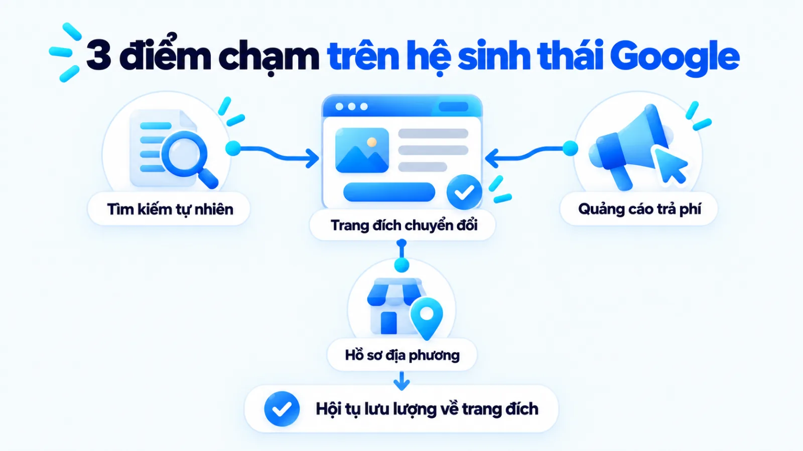
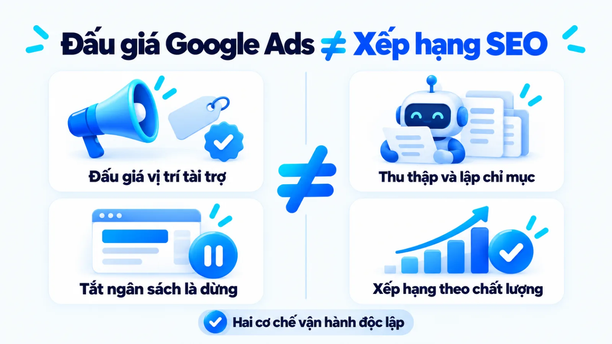
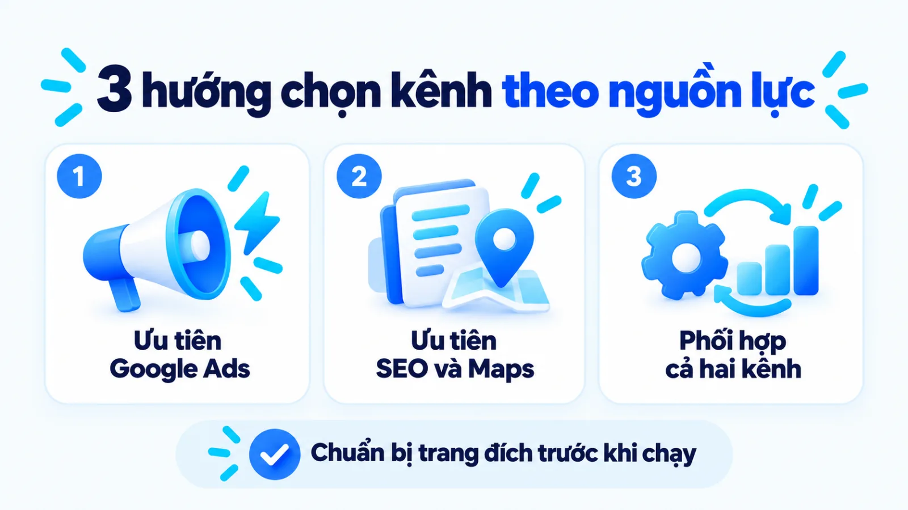
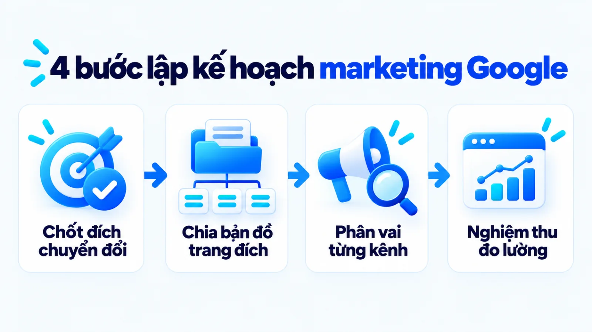
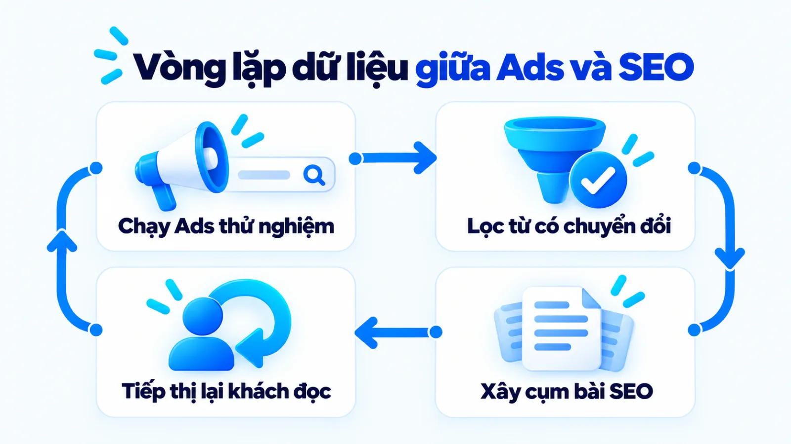
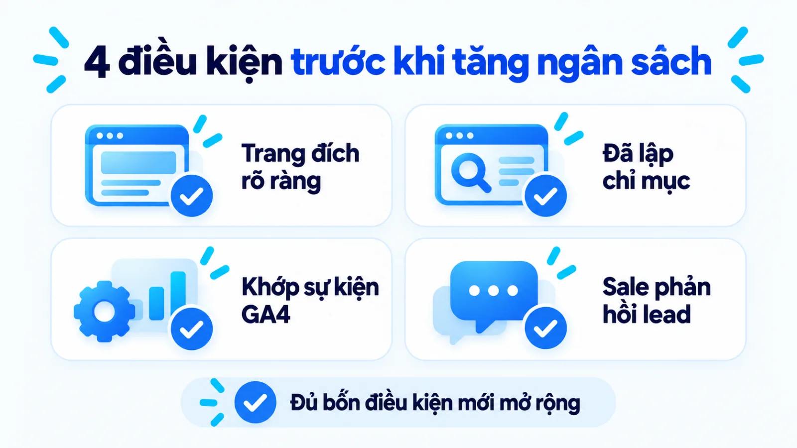

Marketing online Google: Chọn SEO hay Ads?
Marketing online Google là tập hợp các hoạt động tiếp thị giúp doanh nghiệp xuất hiện, thu hút và chuyển đổi khách hàng trên hệ sinh thái của Google gồm Search, Maps, YouTube và mạng hiển thị thông qua cả kênh tự nhiên lẫn quảng cáo trả phí. Với doanh nghiệp vừa và nhỏ, nếu đồng nhất toàn bộ hoạt động tiếp thị trên Google với việc mua quảng cáo từ khóa, đội ngũ rất dễ dồn ngân sách vào lượt nhấp ngắn hạn khi trang đích và hệ thống đo lường chưa sẵn sàng. Khi phân định rõ vai trò tạo dữ liệu sớm của Google Ads với khả năng tích lũy tài sản tìm kiếm bền vững của SEO, người phụ trách marketing mới chọn đúng điểm bắt đầu theo nguồn lực hiện có. Tôi là Lê Tuấn Việt, Marketing Leader tại TAKI Group. Trong bài viết này, tôi phân tích ranh giới giữa các kênh trên Google, tiêu chí chọn phương án phù hợp với điều kiện vận hành và cách đọc dữ liệu chuyển đổi thực chất cho doanh nghiệp.
- Đăng ngày
- Cập nhật

Tóm tắt nhanh
- Marketing online Google bao phủ cả hiện diện tự nhiên (SEO, Google Business Profile) lẫn quảng cáo trả phí (Google Ads), không đồng nhất với riêng việc chạy quảng cáo từ khóa.
- Chi tiêu cho Google Ads không giúp website tăng thứ hạng tự nhiên; hệ thống đấu giá quảng cáo và thuật toán xếp hạng tìm kiếm của Google vận hành hoàn toàn độc lập.
- Doanh nghiệp nên ưu tiên Google Ads khi cần kiểm chứng nhu cầu sớm trên trang đích đã hoàn thiện, ưu tiên SEO để xây tài sản dài hạn, hoặc phối hợp cả hai để lấy dữ liệu chuyển đổi thật nuôi nội dung trụ cột.
- Hiệu quả tiếp thị trên Google phải được đọc qua ba tầng gồm tín hiệu hiện diện, hành vi đạt chuẩn trên trang đích và khách hàng hợp lệ trong hệ thống bán hàng trước khi mở rộng ngân sách.
Mục lục bài viết8 phần
Marketing online Google là gì?
Marketing online Google là hệ thống điều phối giữa tài sản tìm kiếm tự nhiên gồm SEO (tối ưu hóa công cụ tìm kiếm), hồ sơ địa phương với các chiến dịch trả phí trên Google Search, Google Maps, YouTube và mạng hiển thị nhằm thu hút đúng nhu cầu và chuyển đổi thành khách hàng thực tế.
Khi đặt hệ sinh thái của Google vào bức tranh tổng thể của các kênh digital marketing, người phụ trách cần nhìn nhận đây là một chuỗi điểm chạm nối tiếp nhau. Ba nhóm điểm chạm cốt lõi trên hệ sinh thái Google gồm:
- Tìm kiếm tự nhiên qua SEO: Tối ưu kỹ thuật và nội dung website để hiển thị ở kết quả tự nhiên.
- Quảng cáo trả phí qua Google Ads: Phân phối mẫu quảng cáo gắn nhãn tài trợ trên trang tìm kiếm, video, mạng hiển thị và mua sắm.
- Hiện diện địa phương qua Google Business Profile: Quản lý hồ sơ doanh nghiệp, địa chỉ, giờ mở cửa và đánh giá của khách hàng trên Google Search cùng Google Maps.

Theo Google Search Central năm 2026, SEO giúp máy tìm kiếm hiểu trang và giúp người dùng quyết định truy cập. Ở nhánh trả phí, Google Ads Help năm 2026 chỉ rõ loại chiến dịch quyết định nơi quảng cáo hiển thị; còn quy chuẩn năm 2026 của Google Business Profile Help cho phép doanh nghiệp có điểm tiếp xúc trực tiếp với khách hàng quản lý hiện diện miễn phí trên Search và Maps.
Theo Google Ads Help năm 2026, SERP (trang kết quả tìm kiếm) hiển thị đồng thời kết quả tự nhiên và quảng cáo trả phí theo mô hình PPC (trả phí mỗi lượt nhấp). Vì vậy, marketing online Google rộng hơn SEM (tiếp thị trên công cụ tìm kiếm) do bao phủ thêm YouTube, mạng hiển thị và bản đồ.
SEO và Google Ads khác nhau như thế nào?
SEO và Google Ads khác nhau cốt lõi ở cơ chế tạo hiện diện, cấu trúc chi phí và độ bền của lưu lượng truy cập sau khi ngưng ngân sách. Trong khi SEO tích lũy vị trí tự nhiên thông qua chất lượng nội dung và nền tảng kỹ thuật mà không trả phí cho từng lượt nhấp, Google Ads dùng cơ chế đấu giá trả phí để hiển thị ngay tại các vị trí tài trợ theo sáu tiêu chí đối chiếu dưới đây.
| Tiêu chí đối chiếu | Tối ưu hóa tìm kiếm tự nhiên (SEO) | Quảng cáo trả phí (Google Ads) |
|---|---|---|
| Cơ chế hiển thị | Xếp hạng tự động theo độ liên quan ở vùng tự nhiên | Đấu giá gắn nhãn tài trợ theo giá thầu và chất lượng |
| Cấu trúc chi phí | Đầu tư nội dung và kỹ thuật, không trả phí mỗi nhấp | Trả phí trực tiếp cho nền tảng theo lượt nhấp hoặc hiển thị |
| Tốc độ tạo dữ liệu | Cần từ vài giờ đến vài tháng để thu thập và đánh giá | Hiển thị và ghi nhận dữ liệu ngay khi chiến dịch được duyệt |
| Kiểm soát phân phối | Khó chỉ định thời điểm lên hạng hoặc vị trí cố định | Chủ động khóa từ khóa, khu vực, khung giờ và trang đích |
| Độ bền khi dừng tiền | Duy trì lưu lượng tự nhiên trong một giai đoạn tiếp theo | Lưu lượng truy cập dừng ngay khi tài khoản hết ngân sách |
| Năng lực vận hành | Cần kiến trúc thông tin, biên tập sâu và kỹ thuật web | Cần quản trị giá thầu, lọc từ khóa phủ định và tối ưu trang đích |
Bảng đối chiếu trên phản ánh đặc trưng vận hành độc lập của từng kênh khi trang đích hoạt động bình thường. Tốc độ lên hạng SEO hay chi phí mỗi lượt nhấp Google Ads luôn biến thiên theo độ cạnh tranh ngành và lịch sử dữ liệu tài khoản.

Khả năng tạo hiện diện tự nhiên của SEO
Tài liệu năm 2026 của Google Search Central khẳng định Google Search vận hành qua ba bước gồm thu thập dữ liệu, lập chỉ mục và phân phối kết quả; Google không nhận tiền để xếp hạng cao hơn và thay đổi tối ưu cần từ vài giờ đến vài tháng để phản ánh. Vì vị trí tự nhiên phụ thuộc vào độ liên quan, doanh nghiệp cần đầu tư bài bản vào hệ thống content marketing và nền tảng kỹ thuật.
Khả năng kiểm soát phân phối của Google Ads
Ngược lại với cơ chế tích lũy tuần tự của SEO, tôi ưu tiên nhìn Google Ads như công cụ mua dữ liệu thị trường có kiểm soát khi trang đích đã sẵn sàng. Nhờ báo cáo cụm từ tìm kiếm sau vài tuần chạy thử, đội ngũ biết chính xác khách hàng dùng từ ngữ nào trước khi đầu tư sản xuất bài viết dài hạn.
Nên chọn kênh marketing online Google nào?
Doanh nghiệp nên chọn Google Ads khi cần kiểm chứng nhu cầu thị trường và tạo khách hàng tiềm năng sớm trên trang đích đã hoàn thiện, chọn SEO khi cần xây dựng tài sản tìm kiếm bền vững theo hành trình mua, hoặc phối hợp cả hai phương án khi muốn dùng dữ liệu chuyển đổi thật để giảm dần sự phụ thuộc vào quảng cáo theo ba phương án lựa chọn dưới đây.
| Phương án lựa chọn | Phù hợp khi doanh nghiệp có điều kiện | Đánh đổi và ngoại lệ đảo chiều |
|---|---|---|
| Ưu tiên Google Ads | Cần khách sớm; trang đích đã chuẩn và biên lợi nhuận đủ bù giá thầu | Dừng tiền là dừng khách; không chạy ngay nếu trang đích sơ sài hoặc chưa gắn đo lường |
| Ưu tiên SEO và Maps | Chu kỳ mua dài, khách tra cứu kỹ và doanh nghiệp có nhân sự biên tập | Chưa ra đơn ngay; không làm đơn lẻ khi cần dòng tiền ngắn hạn |
| Phối hợp cả hai kênh | Đủ ngân sách chạy song song; dùng Ads bắt từ khóa mua ngay và dùng SEO phủ truy vấn thông tin | Cần người điều phối dữ liệu chung để tránh trùng lặp chi phí |
Theo khuyến nghị năm 2026 từ Google Ads Help, việc chọn loại chiến dịch phải xuất phát từ mục tiêu tiếp thị, chiến lược thương hiệu cùng quỹ thời gian và nguồn lực thực tế mà doanh nghiệp có thể đầu tư vận hành.

Khi phối hợp đúng cơ chế, doanh nghiệp dùng Google Ads đánh vào nhóm từ khóa giao dịch để lấy dòng tiền và dữ liệu thực tế, sau đó chuyển danh sách truy vấn tạo ra khách hàng thật cho đội SEO xây dựng cụm bài trụ cột.
Cách lập kế hoạch marketing online Google 4 bước
Quy trình lập kế hoạch marketing online Google cho doanh nghiệp vừa và nhỏ gồm bốn bước tuần tự để nối mục tiêu doanh thu với trang đích và hệ thống đo lường trước khi chi tiền. Bốn bước triển khai gồm: chốt mục tiêu và hành động cần đo, xác định nhu cầu tìm kiếm gắn với trang đích, phân vai giữa SEO và Google Ads, rồi thiết lập đo lường và kiểm chứng dữ liệu.

Bước 1: Chốt mục tiêu kinh doanh và hành động cần đo
Xác định rõ mục tiêu doanh thu, biên lợi nhuận cho phép và các hành động chuyển đổi thực trên website. Người phụ trách cần thống nhất định nghĩa khách hàng tiềm năng đạt chuẩn với bộ phận bán hàng, đồng thời phân tách zero-party data và first-party data gồm zero-party data (dữ liệu khách hàng chủ động cung cấp) và first-party data (dữ liệu hành vi doanh nghiệp tự thu thập trên kênh sở hữu) để thiết kế biểu mẫu sàng lọc khách.
Đầu ra: Bảng định nghĩa chuyển đổi chính và chuyển đổi phụ có ghi rõ điều kiện ghi nhận, đơn vị đếm và ngưỡng chi phí chấp nhận được giữa marketing với bán hàng.
Bước 2: Xác định nhu cầu tìm kiếm và trang đích
Phân loại truy vấn của khách hàng mục tiêu theo ba tầng nhận biết, cân nhắc và quyết định mua, sau đó gán mỗi nhóm ý định tìm kiếm vào một trang đích duy nhất để tránh tự cạnh tranh. Việc áp dụng quy tắc chọn content angle (góc tiếp cận nội dung) ngay từ khâu lập bản đồ từ khóa giúp mỗi trang đích có trọng tâm thuyết phục riêng, khớp đúng trạng thái của người tìm kiếm.
Đầu ra: Bản đồ từ khóa và trang đích chia theo tầng ý định tìm kiếm, trong đó mỗi nhóm truy vấn cùng ý định được gắn với đúng một URL (đường dẫn trang đích) chủ lực.
Bước 3: Chọn vai trò của SEO và Google Ads
Phân bổ từng nhóm từ khóa vào kênh phù hợp theo thời hạn cần kết quả và ngân sách quý: giao nhóm từ khóa mua cao đã có trang dịch vụ hoàn chỉnh cho Google Ads, đưa nhóm truy vấn hướng dẫn và so sánh vào lịch SEO, đồng thời chuẩn hóa Google Business Profile nếu có điểm bán địa phương. Cách phân vai này là phần cốt lõi khi doanh nghiệp lập kế hoạch marketing theo từng giai đoạn tăng trưởng.
Đầu ra: Bảng phân vai kênh theo quý nêu rõ nhóm truy vấn nào chạy Google Ads, cụm chủ đề nào triển khai SEO, hạng mục tối ưu hồ sơ địa phương và người phụ trách.
Bước 4: Thiết lập đo lường, triển khai và kiểm tra
Cài đặt Google Search Console để kiểm tra lập chỉ mục và cấu hình GA4 (Google Analytics 4, nền tảng phân tích dữ liệu website và ứng dụng) để đo hành động mục tiêu. Theo Google Analytics Help năm 2026, Key Event (sự kiện quan trọng) đo lường hành động có giá trị cốt lõi với doanh nghiệp; khi tạo lượt chuyển đổi Google Ads từ Key Event này, hệ thống sẽ đồng bộ cách tính để phục vụ báo cáo và tối ưu giá thầu.
Đầu ra: Biên bản nghiệm thu đo lường xác nhận các trang đích đã được lập chỉ mục hợp lệ và sự kiện chuyển đổi được ghi nhận chính xác, không đếm trùng trên cả hai công cụ.
Cách đo hiệu quả marketing online Google 3 tầng
Cách đo hiệu quả marketing online Google chính xác là tách hệ thống báo cáo thành ba tầng chỉ số nối tiếp nhau thay vì chỉ nhìn vào lượt truy cập hay số tiền đã tiêu. Ba tầng đo lường cần theo dõi gồm: tín hiệu hiện diện và tương tác ban đầu, hành vi đạt chuẩn trên trang đích, và kết quả kinh doanh thực tế được xác nhận tại bộ phận bán hàng.
Trước khi đọc bảng, người phụ trách cần thống nhất các chỉ số gồm Impressions (lượt hiển thị), CTR (tỷ lệ nhấp), CPC (chi phí mỗi lượt nhấp), Micro conversion (chuyển đổi vi mô), Lead (khách hàng tiềm năng), CPL (chi phí trên mỗi khách hàng tiềm năng), CPA (chi phí trên mỗi khách hàng chuyển đổi) và ROAS (tỷ suất doanh thu trên chi phí quảng cáo) đối chiếu trên CRM (hệ thống quản trị quan hệ khách hàng). Bảng dưới đây phân tách ba tầng đo lường theo công cụ ghi nhận và giới hạn quyết định.
| Tầng chỉ số đo lường | Chỉ số và công cụ ghi nhận | Giới hạn và quyết định tối ưu |
|---|---|---|
| Tầng 1: Tín hiệu hiện diện | Đo Impressions, CTR, CPC và thứ hạng qua Google Search Console, Google Ads | Cho biết sức hút trên SERP nhưng chưa phản ánh chất lượng khách hay doanh thu |
| Tầng 2: Hành vi trên trang | Đo Micro conversion, Key Event, điền biểu mẫu và nhấp gọi trên GA4 | Xác nhận trang đích có tương tác nhưng chưa tách được khách thật với bấm nhầm |
| Tầng 3: Kết quả kinh doanh | Đối chiếu Lead hợp lệ, CPL, CPA và ROAS thực tế trên hệ thống CRM | Chịu độ trễ theo chu kỳ chốt đơn; cần đọc theo kỳ đủ dài để tránh cắt nhầm kênh |
Người quản lý cần phân biệt rõ micro conversion và macro conversion (chuyển đổi vĩ mô) vì CTR cao hay CPC rẻ vẫn gây lỗ nếu không tạo ra CPL, CPA và ROAS hợp lệ. Khi một trang đích liên tục tiêu tốn ngân sách qua một chu kỳ bán hàng mà không tạo ra khách hàng tiềm năng đạt chuẩn, người phụ trách cần tạm dừng để rà soát lại độ khớp ý định tìm kiếm và biểu mẫu liên hệ.
Giới hạn khi quy kết chuyển đổi cho một kênh
Tài liệu hướng dẫn năm 2026 của Google Analytics Help định nghĩa quy kết (attribution) là hành động phân bổ công đóng góp cho các quảng cáo, lượt nhấp và yếu tố khác nhau trên lộ trình dẫn người dùng tới một sự kiện quan trọng hoặc chuyển đổi. Ba nguyên nhân phổ biến làm lệch dữ liệu quy kết giữa các kênh trên Google gồm:
- Hành trình mua đa điểm chạm khiến khách tìm hiểu qua bài SEO trên điện thoại, xem Google Maps rồi mới dùng máy tính nhấp quảng cáo thương hiệu để đặt hàng.
- Khách hàng sao chép đường dẫn bài viết gửi riêng cho đồng nghiệp qua ứng dụng nhắn tin trước khi quay lại mua, tạo ra hiện tượng dark social (lưu lượng chia sẻ qua kênh riêng tư khó định danh nguồn) bị xếp vào truy cập trực tiếp.
- Chênh lệch cơ chế ghi nhận thời điểm chuyển đổi giữa Google Ads với GA4, hoặc khách hàng từ chối cookie và gọi thẳng vào số điện thoại trên màn hình.
Ví dụ phối hợp SEO và Google Ads thực tế
Phối hợp SEO và Google Ads ở doanh nghiệp vừa và nhỏ đạt hiệu quả cao nhất khi dùng ngân sách quảng cáo nhỏ để lọc truy vấn tạo khách hàng thật, sau đó chuyển dữ liệu này sang xây dựng cụm bài SEO chủ lực. Trong một ví dụ biên tập, không phải kết quả khách hàng thật, một doanh nghiệp bảo trì thiết bị văn phòng B2B (doanh nghiệp với doanh nghiệp) tại Hà Nội đã áp dụng cơ chế này trong hai quý liên tiếp.
Ví dụ biên tập, không phải kết quả khách hàng thật
Luân chuyển dữ liệu truy vấn từ Google Ads sang cụm nội dung SEO cho dịch vụ B2B
Doanh nghiệp bảo trì này có một nhân sự nội dung và ngân sách quảng cáo vừa phải. Thay vì chia nhỏ tiền cho mọi dịch vụ, đội ngũ khóa một gói bảo trì định kỳ có biên lợi nhuận tốt nhất để làm điểm thử nghiệm.

Ở giai đoạn đầu triển khai, đơn vị hoàn thiện trang đích, cập nhật Google Business Profile và bật Google Ads Search cho từ khóa thuê dịch vụ tại Hà Nội kèm lọc từ khóa phủ định hàng tuần. Sang giai đoạn hai, đội nội dung dùng câu hỏi từ nhóm khách hợp lệ của quảng cáo để viết cụm bài SEO dẫn về trang dịch vụ và đối chiếu chất lượng khách tiềm năng định kỳ với bộ phận bán hàng.

Câu hỏi thường gặp về marketing online Google
Chạy Google Ads có giúp từ khóa SEO lên top nhanh hơn không?
Không, việc chi trả ngân sách cho Google Ads không giúp website được thu thập dữ liệu thường xuyên hơn hay được cộng điểm trong thuật toán xếp hạng tự nhiên của Google. Tuy nhiên, dữ liệu từ khóa phát sinh chuyển đổi thật từ Google Ads có thể giúp đội ngũ nội dung chọn đúng chủ đề SEO sát nhu cầu mua hơn.
Ngân sách hạn chế thì doanh nghiệp nhỏ nên bắt đầu từ đâu?
Doanh nghiệp nên bắt đầu bằng việc hoàn thiện trang đích cho dịch vụ chủ lực, thiết lập miễn phí Google Business Profile nếu có điểm bán địa phương và cài đặt Google Search Console cùng Google Analytics 4. Khi hệ thống đã ghi nhận đúng hành động liên hệ, bạn mới chạy thử Google Ads vào từ khóa mua rõ ràng hoặc viết cụm bài SEO ngách.
Khi nào doanh nghiệp nên tạm dừng hoặc chỉnh chiến dịch Ads?
Doanh nghiệp cần điều chỉnh hoặc tạm dừng khi quảng cáo phát sinh lượt nhấp nhưng không tạo ra hành vi đạt chuẩn trên trang đích, hoặc khi chi phí mỗi khách hàng hợp lệ vượt biên lợi nhuận cho phép. Trước khi đổi ngân sách, người phụ trách phải kiểm tra xem chuyển đổi trên công cụ có khớp với số khách thực tế ở bộ phận bán hàng hay không.
Vì sao số chuyển đổi Google Ads lệch với GA4 và sổ bán hàng?
Số liệu giữa ba bên thường chênh lệch do khác biệt về mô hình quy kết, cửa sổ thời gian ghi nhận và cách tính thời điểm phát sinh sự kiện theo ngày nhấp quảng cáo hay ngày diễn ra hành vi. Ngoài ra, các cuộc gọi trực tiếp hoặc tin nhắn qua ứng dụng bên thứ ba không qua biểu mẫu cũng làm dữ liệu lệch khỏi doanh thu thực tế.
Từ khóa thương hiệu đã lên top SEO có cần chạy Google Ads?
Có, nếu đối thủ đang đấu thầu quảng cáo ngay trên tên thương hiệu của bạn hoặc khi cần điều hướng khách vào trang ưu đãi ngắn hạn khác với trang chủ SEO. Ngược lại, nếu không có đối thủ cạnh tranh trả phí trên tên thương hiệu, doanh nghiệp nên dành ngân sách cho nhóm truy vấn tìm giải pháp chưa biết tên thương hiệu.
Kết luận
Quyết định chọn SEO, Google Ads hay phối hợp cả hai không nằm ở việc kênh nào ưu việt hơn tuyệt đối, mà phụ thuộc vào thời điểm doanh nghiệp cần dòng khách hàng, độ hoàn thiện của trang đích và khả năng đo lường chuyển đổi thực chất qua ba tầng chỉ số.
Ngay trong tuần này, bạn có thể tự thực hiện một bước kiểm tra nhỏ với công cụ miễn phí sẵn có: mở Google Search Console xem các trang dịch vụ chính đã được lập chỉ mục chưa, rà lại danh sách Key Event trong GA4 và kiểm tra biểu mẫu liên hệ trên trang đích hiện tại.
Khi doanh nghiệp chạy song song nhiều chiến dịch nhưng số liệu giữa báo cáo quảng cáo, lưu lượng tự nhiên và doanh số bán hàng vẫn lệch nhau, bạn cần một hệ thống hoạch định và khung đo lường đồng bộ cho toàn bộ bài toán trong chuyên mục Marketing. Hiện tại, điểm nghẽn lớn nhất trên kênh Google của doanh nghiệp bạn đang nằm ở khâu chọn kênh, chất lượng trang đích hay thiết lập đo lường chuyển đổi?